Same words, same photographs, different rooms. Two refined directions sit at the top: Nightbloom from the first review (night sky, stars, lunar energy, pastels as light) and Moonflower from the second (the thirteen cards, stars and flowers together, purple first, the moon, a little metallic shine). The explorations below are kept for reference. Open each one full-screen, on a phone as well as a laptop.
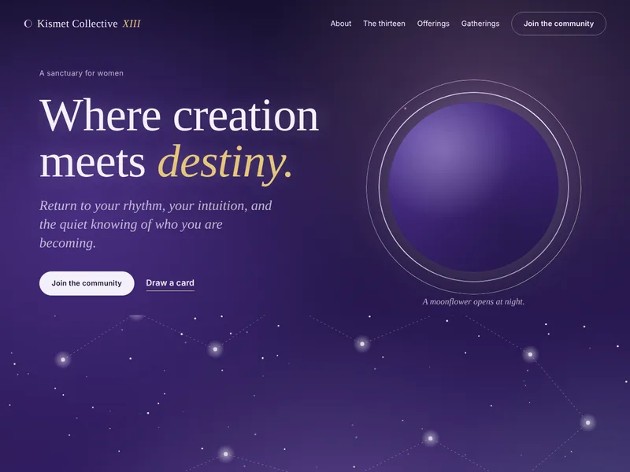
Purple night with the add-your-star sky, a moon that is a floral photograph inside a silver ring, Oracle's thirteen holographic cards with the rainbow kept to a thin iridescent edge, and silver and champagne for the glyphs, lines and sparkle.
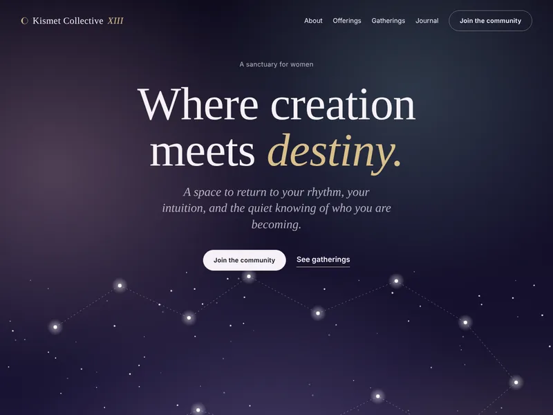
Nocturne's bones, Constellation's add-your-star sky, Lunar's thirteen phases, and the pastel florals as aurora light and photographs. Cormorant Garamond with champagne gold; pale lilac paper for the reading sections so it stays grounded.
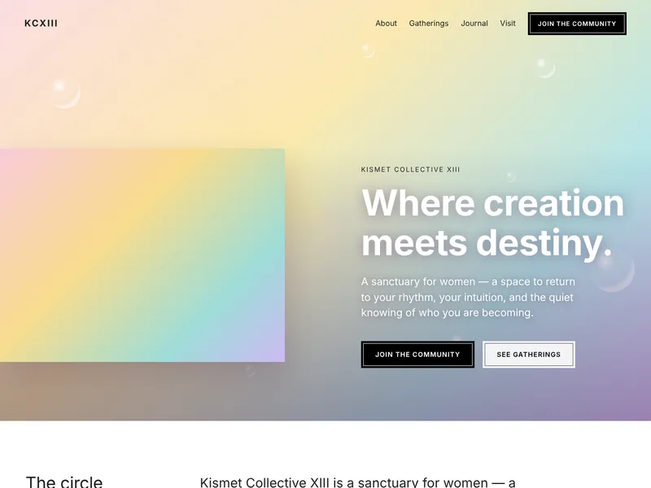
Faithful to the current Squarespace mood board: white rooms, iridescent florals, black boxed buttons, rounded type, the violet footer band.
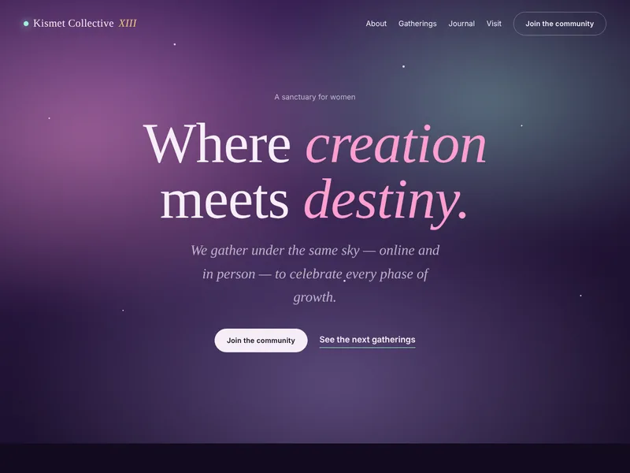
Night garden. Aurora light, candle warmth, Cormorant italics. Gatherings strung along a line of light.
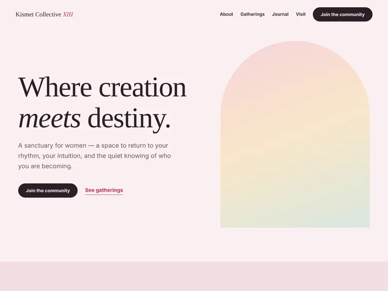
Blush paper and arch-cropped photographs. Magazine pacing, an events table instead of cards, Fraunces for the voice.
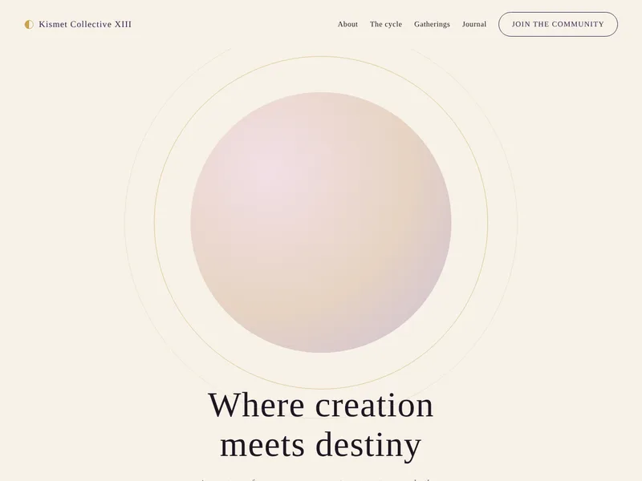
Cream, plum and a thread of gold. A full-moon hero, a strip of thirteen phases, the four movements of the cycle in a ring.
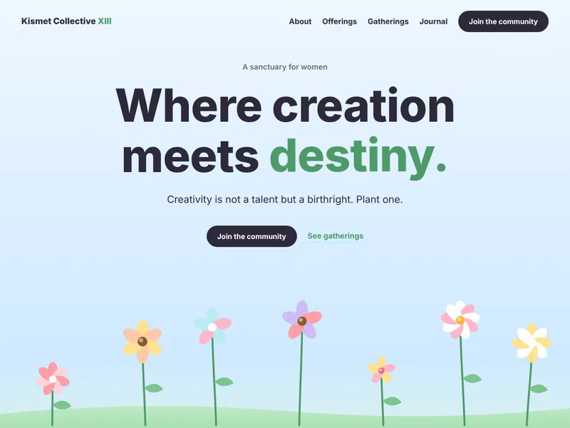
Tap the meadow and a flower grows where you touched; it stays for you. Seed-packet offerings, a planting calendar, pressed-flower journal.
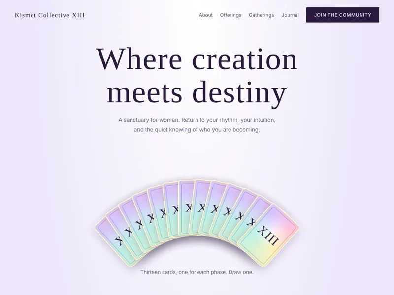
Thirteen holographic cards fanned on lavender twilight. Draw one and it rises and flips to a line from the manifesto and a next step.
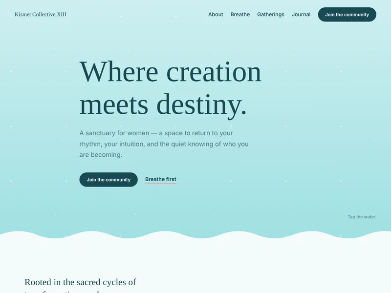
Tap the water and a word floats up. A gooey blob breathes four-four-six with you. Wave-cut sections, a tide table of gatherings.
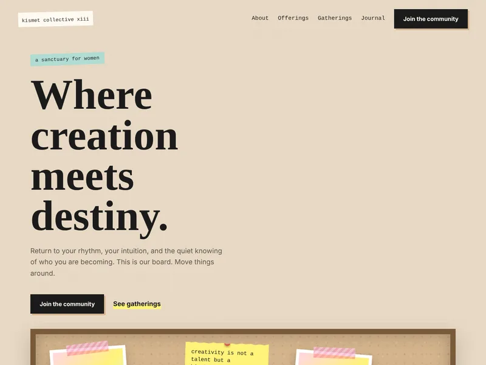
A corkboard of polaroids, torn notes and peel-off stickers you can drag anywhere. Index cards, a to-do list, ticket stubs.
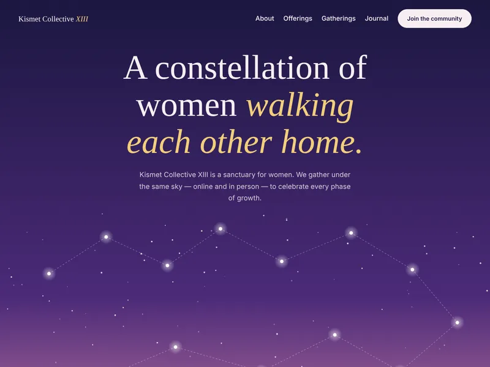
Thirteen named stars over a dusk sky. Type your name and your star joins the line, drawn in gold to the one before you.